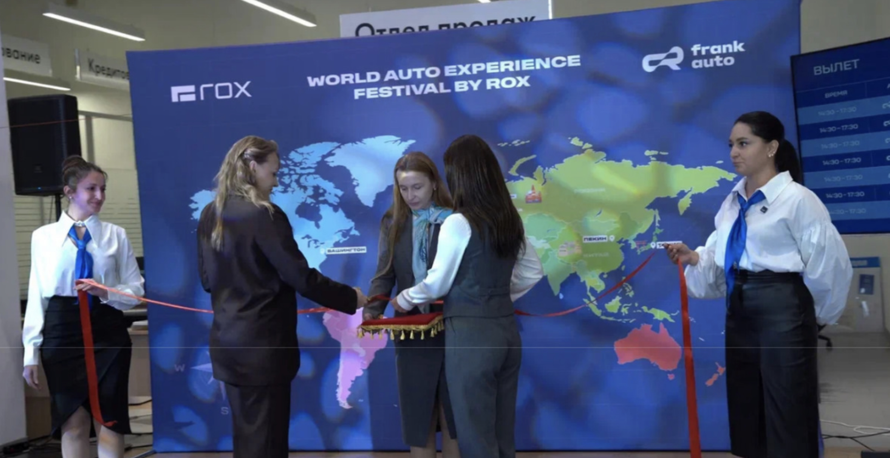
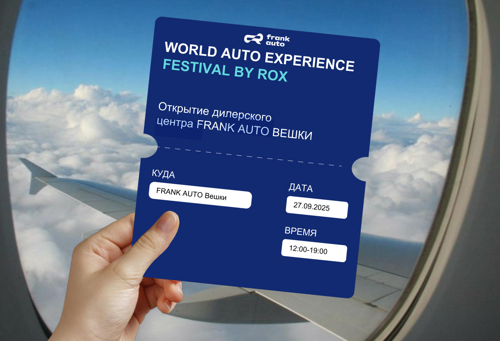
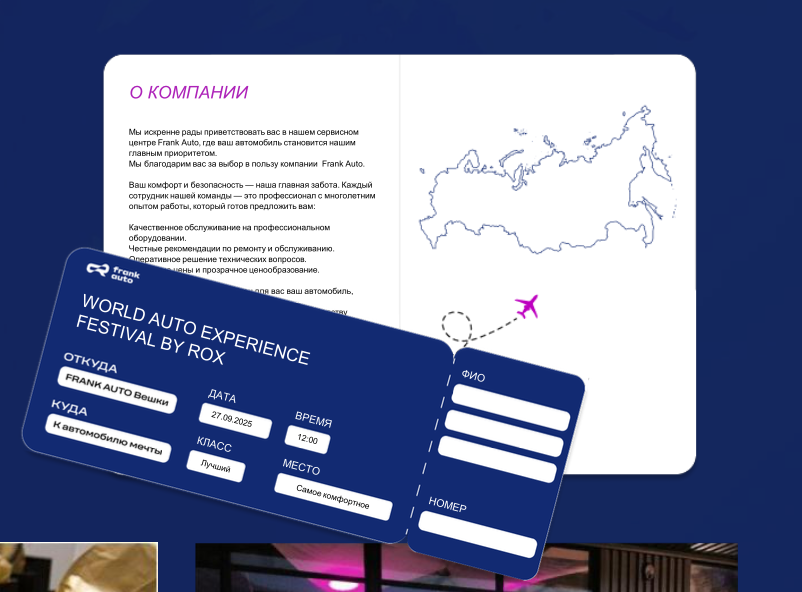
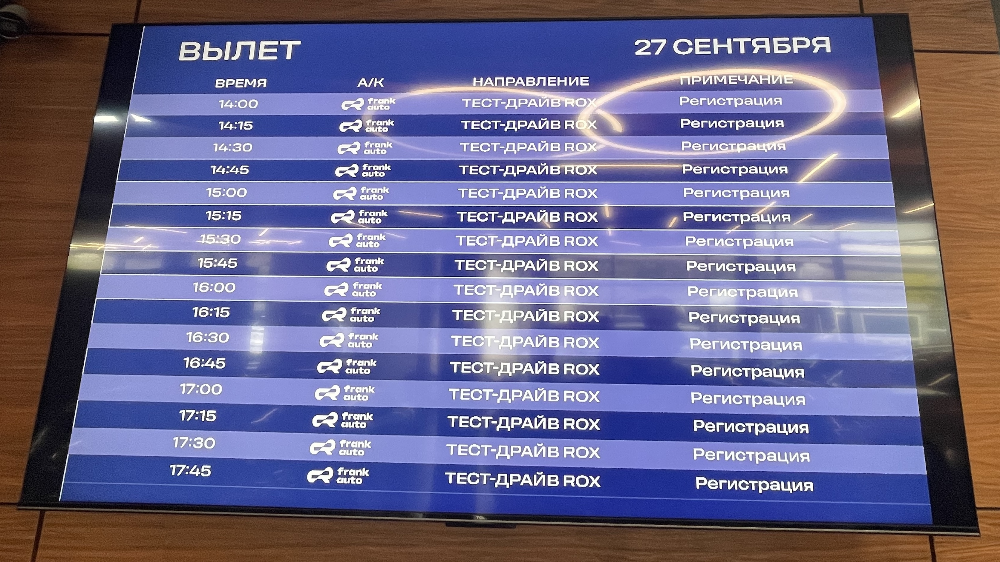

Задача 01
Знакомство с новым брендом
Сформировать интерес к ROX и дать потенциальным покупателям возможность познакомиться с автомобилями вживую.
World Auto Experience Festival by ROX - открытие дилерского центра Frank Auto Вешки и вывод нового автомобильного бренда через experience-концепцию «Все автомобили мира в одном автоцентре».
Создание события, которое объединило знакомство с новым брендом, автомобильный опыт, интерактивную программу и прямое взаимодействие потенциальных покупателей с автомобилями и командой дилерского центра.
Результат запуска нового бренда и открытия дилерского центра.
Открытие дилерского центра Frank Auto Вешки стало возможностью не просто сообщить о появлении ROX, а познакомить аудиторию с брендом, его автомобилями и философией через масштабное мероприятие.
Сформировать интерес к ROX и дать потенциальным покупателям возможность познакомиться с автомобилями вживую.
Превратить открытие Frank Auto Вешки в заметное событие для клиентов, партнёров и автомобильной аудитории.
Обеспечить контакт гостей с автомобилями, консультации менеджеров и возможность пройти тест-драйв.
Основой мероприятия стала концепция «Все автомобили мира в одном автоцентре». Гости отправлялись в путешествие по тематическим локациям, знакомились с автомобильными брендами разных стран и участвовали в интерактивной программе.
Коммуникация в стилистике авиапутешествия и знакомство с концепцией события.
FRANK AUTO AIR, посадочные талоны и паспорта путешественника.
Четыре тематические локации: Германия, Япония, Америка и Китай.
Мастер-классы, гастрономия, интерактивы и сценическая программа.
Автомобили, консультации менеджеров и тест-драйвы.
«Все автомобили мира в одном автоцентре» - идея, которая превратила открытие дилерского центра в полноценное путешествие по автомобильным культурам.
Программа объединила тематическое оформление, интерактивные активности, гастрономию, шоу и знакомство с автомобилями. Каждый элемент поддерживал общую идею путешествия.
Хостес в форме стюардесс FRANK AUTO AIR встречали гостей. На входе каждый получал «Паспорт путешественника» и «Посадочный талон».
Германия, Япония, Америка и Китай стали тематическими зонами с автомобилями, мастер-классами и отметками в паспорте путешественника.
Оригами, создание ароматических саше, выжигание по дереву и китайская чайная церемония «Пин Ча».
Гостей ждал фуршет с блюдами, вдохновлёнными гастрономическими традициями разных стран.
Балетный перформанс «Щелкунчик» под руководством Екатерины Черных, шоу-балет TODES и выступление диджея.
Гости могли познакомиться с автомобилями ROX, пообщаться с менеджерами и пройти тест-драйв.
Для гостей также организовали интеллектуально-спортивную игру «Шахматы БРИКС Фатум», а для детей работали роботы-трансформеры.
Завершением маршрута становился розыгрыш призов среди гостей, собравших все отметки в паспортах путешественника.
Мероприятие объединило презентацию нового бренда, открытие дилерского центра и прямое взаимодействие с потенциальными покупателями.
План продаж выполнен на 100% за первые два месяца.
Контакты потенциальных покупателей, полученные в рамках мероприятия.
Возможность познакомиться с автомобилями ROX через личный опыт вождения.
В проекте важно было объединить маркетинговую задачу запуска бренда с форматом события, который вовлекает гостей, знакомит их с автомобилями и создаёт возможности для дальнейшего взаимодействия с дилерским центром.
Работа над идеей мероприятия «Все автомобили мира в одном автоцентре» и её связью с задачами запуска ROX.
Проработка логики знакомства гостей с мероприятием, тематическими зонами и автомобилями.
Объединение интерактивных, гастрономических и развлекательных элементов в единую концепцию.
Связь впечатлений от события с целями дилерского центра: контактами потенциальных покупателей и тест-драйвами.
Фотографии и материалы мероприятия показывают, как концепция путешествия воплотилась в пространстве дилерского центра и программе для гостей.



